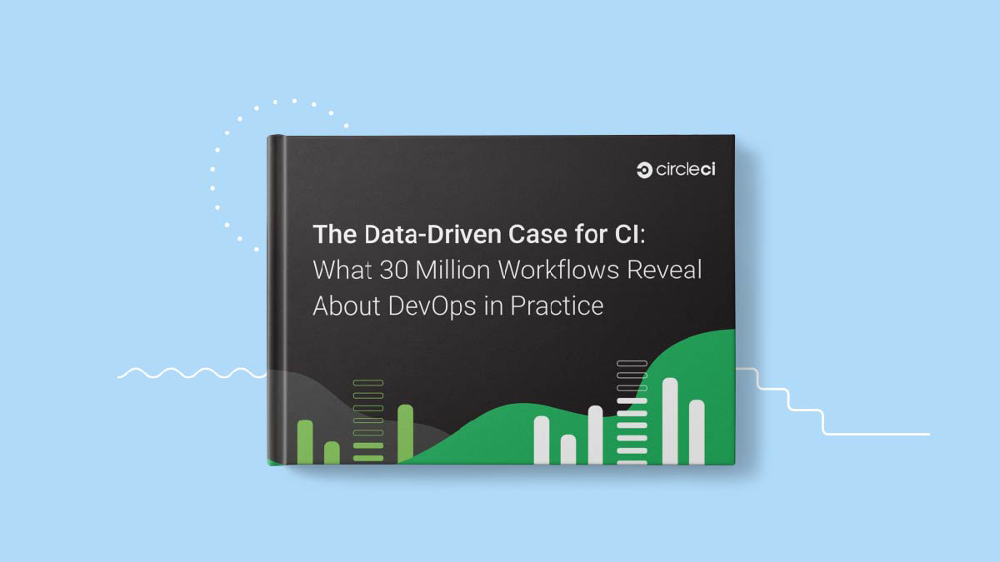

データで見る CI: 3,000 万のワークフローから明らかになった DevOps の実際
3,000 万件のワークフローから取得し、その結果をレポートや調査結果に記されている業界標準と比較しました。


You should receive an automated response notifying you that we received your info. Someone from our Enterprise team will be reaching out to you shortly.
You should receive an automated response notifying you that we received your info. Someone from our Enterprise team will be reaching out to you shortly.